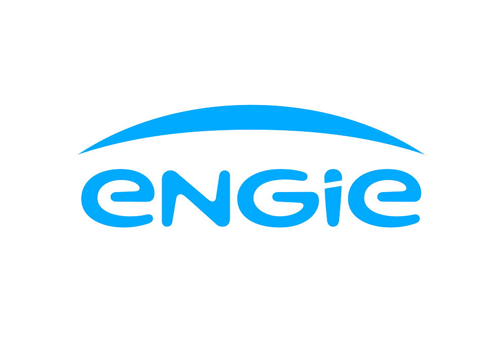
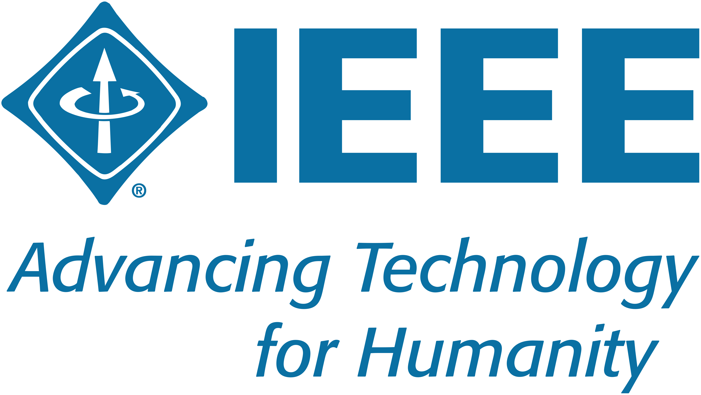
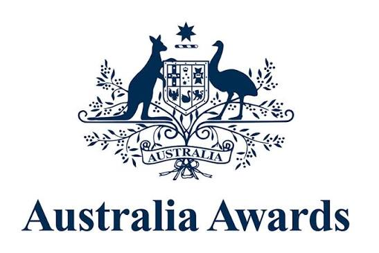
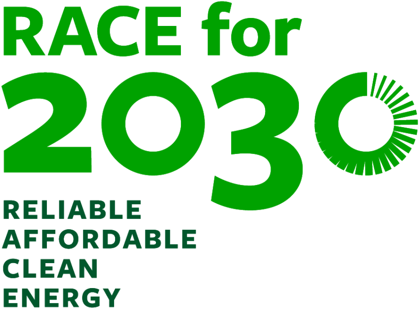

Hello, I'm
Dr. QashtalaniHaramaini.
Energy Systems ProfessionalAI ResearcherFounder · Electra Academy & EnVisor
Building intelligence for Indonesia's electrical grid.

Building intelligence for Indonesia's electrical grid.
I'm an energy systems professional with 10+ years in Indonesia's electricity sector, specializing in power distribution, network reliability, and efficiency improvement — including technical and non-technical loss reduction.
My experience spans both a state-owned utility (PT PLN) and the private sector (ENGIE), combining operational leadership with applied work in energy efficiency, AI/data analytics, and the green-energy transition. I coordinate multi-stakeholder programmes across government bodies, industry, universities, and local authorities — and work fluently in Bahasa Indonesia and English.
I hold a Ph.D. in Electrical Engineering (Power Systems) from Universitas Indonesia and am pursuing a second Ph.D. at Monash University under the RACE for 2030 programme (urban design & the energy transition). I also founded EnVisor, an AI-powered energy-efficiency advisor, and Electra Academy (electraacademy.com), a practitioner-focused electrical & energy skills academy.
What excites me — the energy transition. I'm an enthusiast of smart grids, distributed solar & net metering, demand-side management, dynamic tariffs, AI for utilities, and turning idle energy into value. I'm actively looking for challenges in advising the energy transition, and love connecting with researchers, engineers, and founders building Indonesia's clean-energy future — if that's you, let's talk.
 PT PLN (Persero)
PT PLN (Persero)
Engie
IEEE
Australia AwardsFounded Electra Academy — a practitioner-focused electrical & energy skills academy training Indonesia's next generation of engineers with industry-grade, hands-on courses in power distribution, renewable energy, and applied AI.
Built an AI energy-efficiency advisor for Indonesian households — photo-based appliance recognition, monthly-bill estimation, benchmarking, and cost-optimisation advice. Extended to industry via reactive-power / capacitor-bank consulting to cut kVARh penalties.
Safeguard distribution-network efficiency and revenue by protecting energy-transaction integrity and leading enforcement against illegal usage. Manage metering-integrity and field-inspection teams, and built a machine-learning electricity fraud detection system that prioritises inspection targets — raising the detection hit rate from ~15% to ~77% and recovering lost revenue.
Ran a service unit delivering electricity to 300,000+ customers. Oversaw distribution operations, service quality, and rapid complaint resolution; led customer-service and field teams and coordinated with local government and community stakeholders to hold SAIDI/SAIFI reliability targets.
Led the distribution-operations team in a dense industrial area — planning preventive maintenance, coordinating fault response and network switching, and driving reliability improvements to keep SAIDI/SAIFI low across the feeders.
Analysed generation performance across operations, maintenance, and procurement at the Paiton power plant — producing efficiency, reliability, and cost-optimisation insights. My first exposure to private-sector, IPP-scale power generation.
Second doctorate under the RACE for 2030 programme (Reliable, Affordable, Clean Energy) — researching sustainable urban design and the energy transition.

GPA 3.85 / 4.00 · Doctoral research in power systems — machine learning for non-technical loss detection, satellite/GIS-based asset inventory, and energy-to-value monetisation (EnerBit).
GPA 3.76 / 4.00 · Power Systems & Machine Learning · Supervisor: Prof. Iwa Garniwa.
GPA 3.48 / 4.00 · Foundation in electrical engineering — power systems, electrical machines, and distribution networks.
My research interests, technical skills, international exposure, and professional memberships — each explained in detail and linked to the publications behind them.
Explore my expertise & interestsPeer-reviewed research on power systems, solar economics, load forecasting, and energy monetization.
A strategy model for monetizing Indonesia's idle power surplus — mapping ~7 GW of spare capacity to a potential ~56,640 BTC/year.
Read publicationAn STM32 + STPM10 metering design with GPS/GPRS telemetry to detect tampering and reduce non-technical losses at PLN.
Read publicationA Pearson-correlation study relating rooftop-solar adoption to HDI, household income, and electricity consumption.
Read publicationBenchmarking of forecasting approaches for medium-term distribution planning across accuracy and data needs.
Read publicationA cost analysis of net-metering policy for a 21 MW / 7.13 MWp medium-voltage PV case in Bekasi.
Read publicationNPV sensitivity of PV distributed-generation investment across penetration scenarios and optimum capacity.
Read publicationA tornado analysis of how NPV responds to IRR, tariff, and CapEx under increasing PV penetration.
Read publicationOptimal PV siting on radial feeders to minimise network power losses.
Read publicationTime-of-Use tariff scenarios estimating ≈ Rp 3.6 trillion/year in potential generation-cost savings.
Read publicationProduction tools shipped for PLN operations, energy analytics, and the community — all live.
The current 1:0.65 export ratio penalizes industrial prosumers while grid infrastructure remains underprepared for bidirectional flow. My 21 MW Bekasi case showed a cumulative consumer loss of −$2,102 over two years. Indonesia needs dynamic net metering — not a static punitive multiplier.
Indonesia has 40% of the world's geothermal potential but uses less than 10%. Paired with the right monetization model, its baseload stability could transform PLN's finances. EnerBit explores one path: regulated Bitcoin mining as intermediate value capture while renewable buildout continues.
30 industrial customers in PLN Bekasi showed mid-peak demand elasticity of −0.3 — they will shift load when the incentive is real. That's a 2.59% daily generation-cost reduction across the interconnection. Dynamic pricing needs political will more than technology.
Countries with unstable fiat aren't using Bitcoin as a medium of exchange; they use it as a hedge against monetary-policy failure. Indonesia's position is stronger, but the principle holds: states that hold Bitcoin early may gain structural advantages. El Salvador and Bhutan are running the experiment.
Classical scholars banned guaranteed returns on capital because they distort risk distribution. Bitcoin, a fixed-supply asset with no guaranteed yield, aligns more naturally with Islamic economic principles than fractional-reserve banking. The debate is about what unit best represents productive participation without exploitation.
Electricity subsidies exceed Rp 70 trillion annually, disproportionately benefiting wealthier, higher-consumption households. A well-designed TOU + targeted-subsidy system would be more equitable and fiscally sustainable. The politics are hard — but so is the cost of inaction as the global transition accelerates.
Every digitalization wave builds better visualizations but never closes the loop to action. An operator sees a loss anomaly — then what? The next frontier is agentic AI that detects the anomaly, cross-references history, generates a work order, and notifies the field team, with no human middle step.
When an AI system makes a wrong recommendation that causes operational loss, who is responsible — the engineer, the vendor, or the system? Until there are clear accountability frameworks for government-linked companies, adoption stays slow regardless of capability. It's a governance problem before it's a technology problem.
Moving a fraud-detection hit rate from 15% to 77% wasn't about a brilliant model — it was because inspectors work from intuition and social pressure, while the model works from patterns. ML doesn't get tired, know the customer, or fear conflict. AI wins most where human judgment is biased by relationships.
Awards, conferences, teaching & community work — the slideshow plays on its own; use the arrows to browse manually.
Open to research partnerships, AI collaborations, consulting conversations, and anything about Indonesia's energy future.